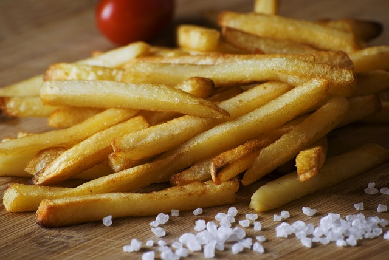

Authentic French Fries

Image by Wikimedia Commons
Description
French fries which everyone loves and knows is a easy dish to make
,it just requires basic ingredients to make a delicious set of
french fries.
These are crispy, golden fries that can be paired with burgers
or sandwichs. These are crispy on the outside and tender on the
inside. Make these delicious French Fries and enjoy!
Ingredients
- 1 large baking potato
- 1 tablespoon of olive oil
- 1/2 tablespoon paprika
- 1/2 tablespoon garlic powder
- 1/2 tablespoon chili powder
- 1/2 tablespoon onion powder
Steps
- Gather all the ingredients. Preheat the oven to 450 degrees F(230 degrees C).
- Cut potato into thin wedges.
- Mix olive oil, paprika, garlic powder, chili powder and onion powder
together in a medium-sized bowl. Add potato wedges and toss to coat
evenly. Arrange on a baking sheet.
- Bake in the preheat oven, turing once or twice, until golden brown
or crispy, about 45 minutes.
- Serve and enjoy!
You would also like our* other recipes, check our homepage.
Home